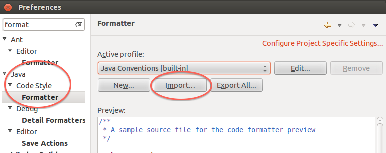
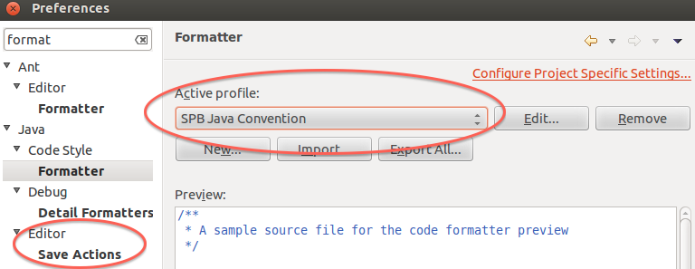
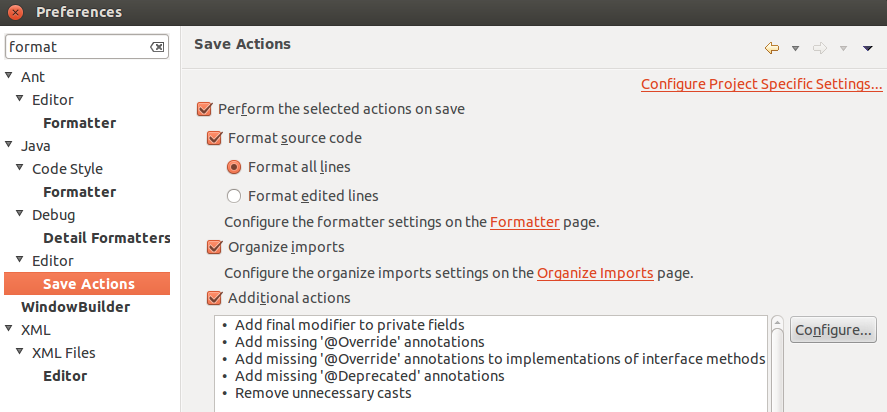
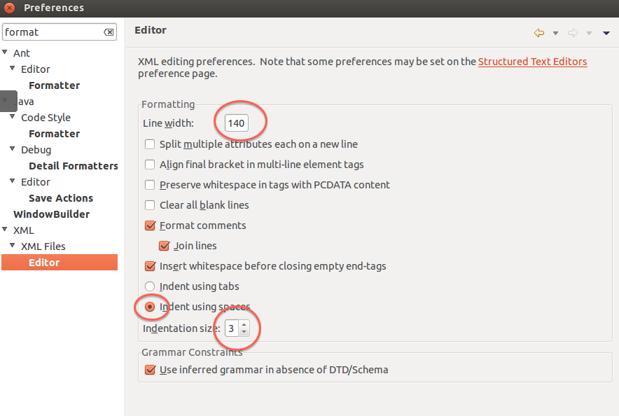
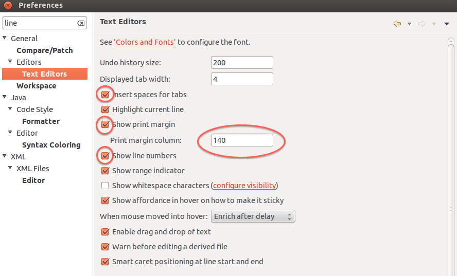

For developers on the actual SeqWare project, these are the proposed standards for code committed for development toward 1.1.X.
First, an Eclipse code formatting file is provided for users of the Eclipse IDE. Please look in the develop branch for updates. In addition, for users of the NetBeans IDE, the Eclipse Code Formatter plugin must be configured with the same file.
Second, a Checkstyle configuration file is available. This will be tightened during the run-up toward 1.1.X but currently it will do some light validation on your code and will reject a build if your issues are particularly egregious.
In some edge cases CheckStyle will incorrectly report an error. In these cases, you may choose to temporarily disable Checkstyle from your source code. Thanks to ForgeRock
In order to toggle Checkstyle on and off
// @Checkstyle:off
... ignored
// @Checkstyle:on
In order to ignore the next line
// @Checkstyle:ignore
... ignored
... checked
In order to ignore the next N lines (-ve means previous lines)
// @Checkstyle:ignoreFor 2
... ignored
... ignored
... checked
Note that is is possible to turn on and off the Eclipse code formatter for sections of code that may be manually formatted in a way that is superior to what we can configure in Eclipse. The relevant tags are as follows:
// @formatter:off
...
// @formatter:on
Using the above eclipse code formatting file, open preferences in Eclipse and search for “format”.
Click on “Formatter” under Java -> Code Style.
Click Import and and import the seqware-eclipse-code-style.xml file.

After the import is complete the SPB Java Convention will be the active profile.
Next Click on Editor -> Save Actions

Update the Save Actions preferences to look like the screenshot below.

Next Click on XML Files -> Editor and make the changes shown below. 
Next search for “line” and click on Editors -> Text Editor.
Make the changes specified in the screen shot below.

Follow the instructions available at Eclipse Java Code Formatter in NetBeans Plugin Manager